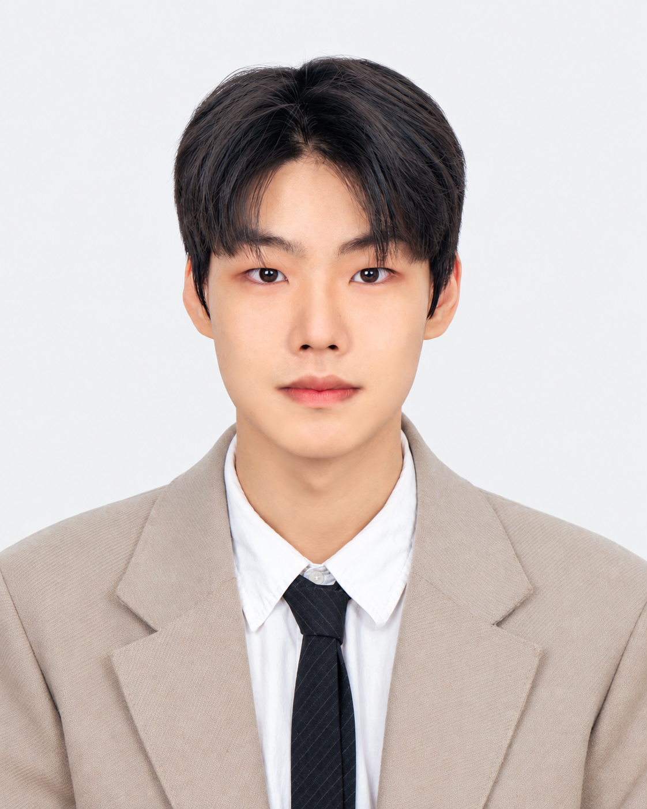

Soficity of One-Relator Groups
Research interests
- Geometric and combinatorial group theory
- Soficity, amenability, and residual properties
- Geometric topology

My research interests lie in geometric and combinatorial group theory and geometric topology. I am particularly interested in soficity, amenability, and residual properties of groups, as well as the connections between group-theoretic structures and the topology of manifolds.